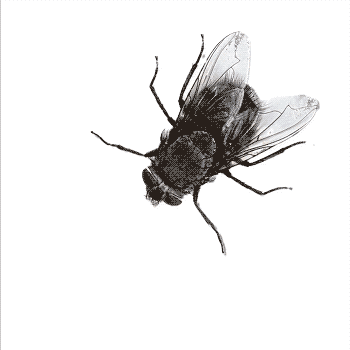
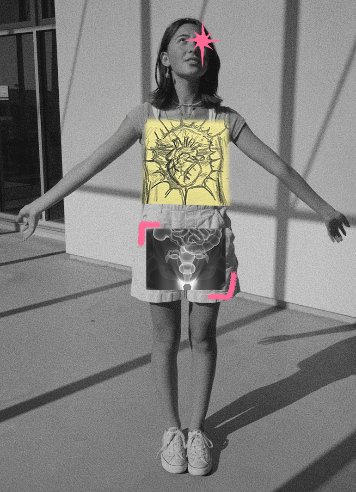
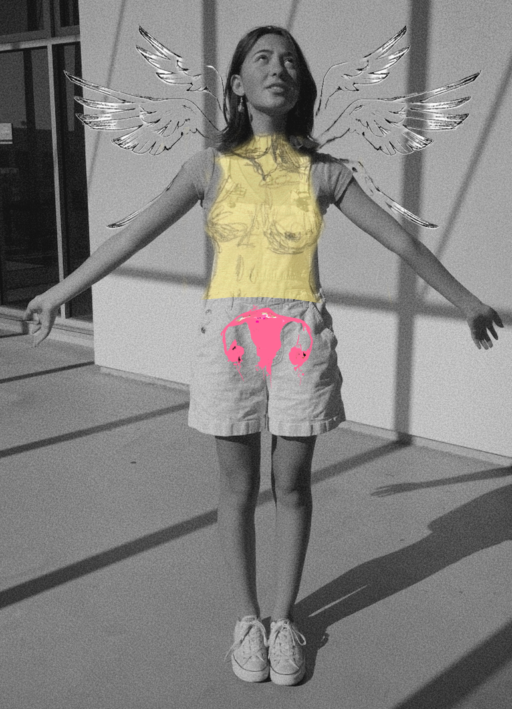
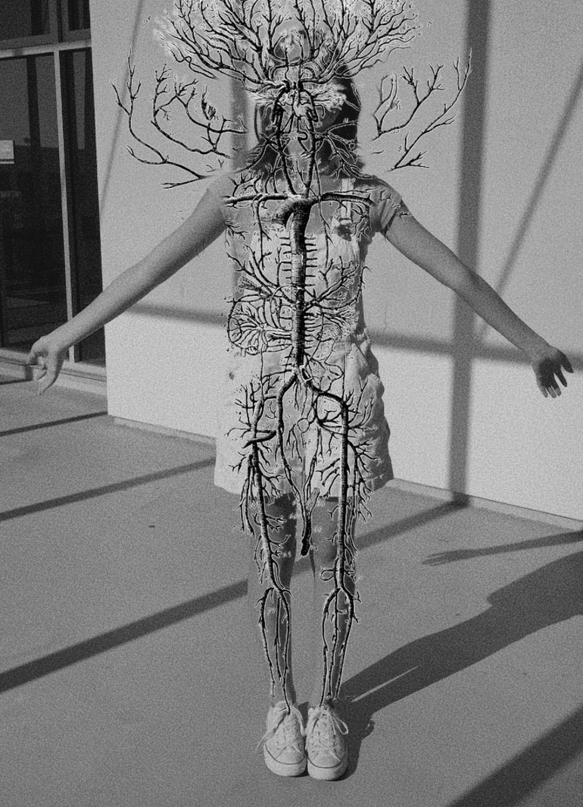
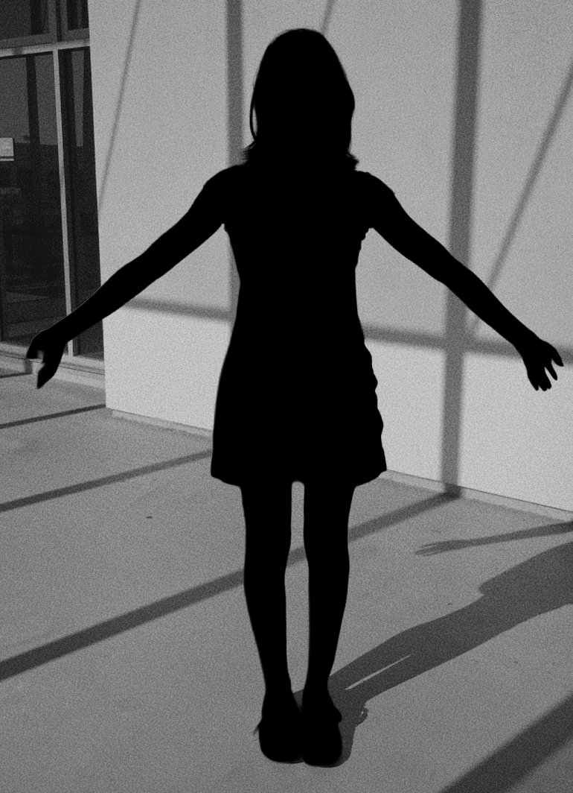

As I researched this topic, trying to find an answer to what a woman is, I found something I couldn't believe. The science was actually built on flies. Not on us.
In the early 20th century, biologist Thomas Hunt Morgan conducted foundational sex chromosome research — not on humans, but on Drosophila melanogaster, the common fruit fly. His work on X and Y chromosomes in flies became the template for how we understand biological sex in all organisms, including humans. This research earned him the Nobel Prize in 1933 — and its framework became the foundation of modern genetics.
But flies are not humans. The uncritical transfer of the XY model from fruit flies to humans flattens the complexity of human biology — and that simplification has been left unchanged for nearly a century.

Maybe you thought like I did — a woman is a person with a uterus, someone who menstruates. But this definition excludes a lot of people. Relying on biology to define "woman" typically excludes transgender women, intersex people, and those with reproductive diseases.




click on me
So… if not chromosomes, then it's estrogen right?
Well, we all run on both. Hormones don't belong to a gender. Estrogen is not the "female" hormone. In fact, it is present and essential in all bodies — regardless of assigned sex.
It also comes in many different forms: estradiol, estrone, estriol.
Testosterone is also present in all bodies — ovaries actually produce it too.
So it's not really that men have all the testosterone and women have all the estrogen. Levels of both vary enormously between individuals — and the overlap between ranges is significant.
There is no single site in the body where gender lives. Not in the chromosomes. Not in the hormones. Not in the anatomy. The certainty we feel about gender being 'natural' or 'obvious' isn't coming from biology but rather how we were taught to read our bodies.
continue